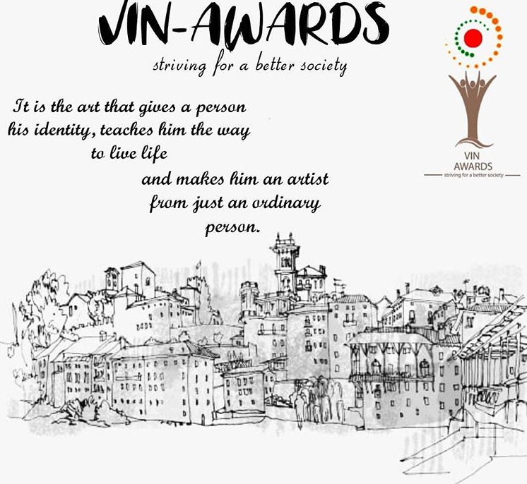
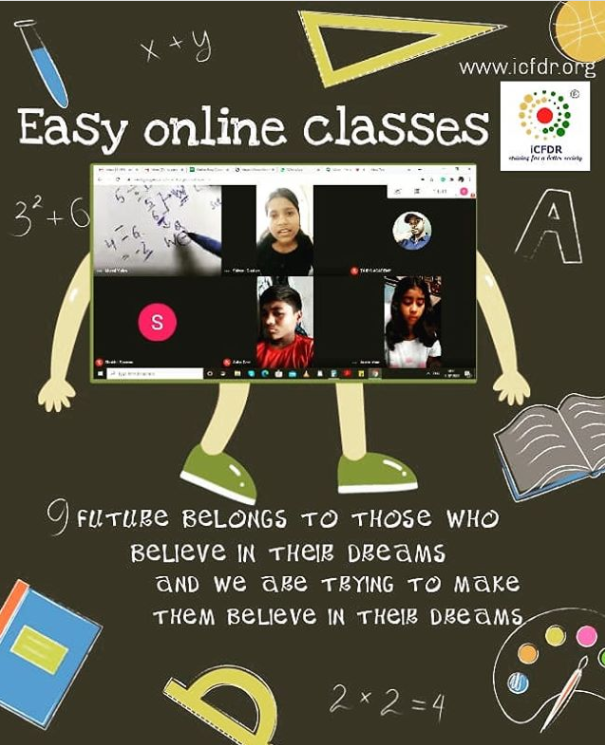

The iCFDR fellowship is a twelve months program based in Delhi, India, that targets to transform
young individuals into excellent leaders with futuristic and holistic skills. The iCFDR fellowship
aims at relieving the incredibly complex and pressing challenges and sufferings of the
underprivileged students by tutoring them and building a brighter future for them.
A fellow is expected to enthusiastically participate in shaping and developing young
minds towards their better tomorrow. This fellowship provides
a platform to such individuals who are committed towards making a difference in the lives of the
less fortunate people. Hence it looks for those that are bent on
offering their services to others, fostering dignity for all human beings, and promoting stronger
human relationships.

VIN AWARDS
The VIN Awards are a set of prestigious honours given away annually by iCFDR. The VIN Awards aim to
celebrate and accolade exemplary individuals who dedicate their time towards excelling in their
respective fields. This Award acknowledges those who exemplify the best of their profession’s values
through their accomplishments.
We also wish to empower the Youth who actively work towards making our society a better place, as
well
as the women that form the backbone of their respective industries and professions.
The VIN Awards also promote the trail-blazers of Culture, Social Entrepreneurship and the
Environment
recognizing the importance of holistic development and community development in modern society.

EasyClasses
Easy Classes is a project of iCFDR aimed at mentoring children living in the slums of Delhi. Due to
multiple reasons such as the lack of financial resources, scarcity of schools or poor familial
conditions, these children have limited or no access to education. iCFDR brings learning to their
doorsteps to ensure that
these children don’t lose their hope for a better future.
Two-hour sessions that includes full immersion with the children including
storytellings, helping them with their homework, providing primary education and a variety of other
activities like playing games, craft,
activity based learning and life skills. The objectives include academic development,
life and personality coaching, counselling, and monitoring progress.